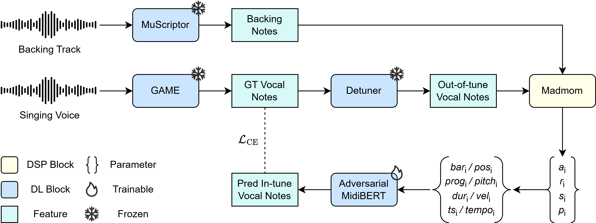

MIDIBack: Harmony-Aware Automatic Pitch Correction Conditioned on Symbolic Accompaniment
Abstract
Automatic pitch correction (APC) aims to correct out-of-tune singing voices to their intended musical notes. Existing systems often rely on rigid music-theoretic rules, vocal-only priors, or raw acoustic spectra, overlooking polyphonic and harmonic cues in the backing track. MIDIBack conditions APC directly on symbolic accompaniment by unifying vocal and backing notes into a shared OctupleMIDI sequence, so intended vocal pitches can be inferred from fine-grained musical context. On clean transcriptions MIDIBack reaches 91.6% RPA, and 83.9% RPA under realistic pitch corruptions, outperforming vocal-only and spectra-conditioned baselines.
Listening clips apply pitch edits with Praat TD-PSOLA via Parselmouth. Five open test clips from ccmixter (Creative Commons) and MIR-1K (academic). No Sonovox / proprietary material.
Architecture
Vocal and backing transcriptions feed one CNPP sequence (Adversarial-MidiBERT); corrected MIDI pitches drive offline APC resynthesis.

Overall architecture and training pipeline of MIDIBack.
Listening examples
Same evaluation corruptions as the paper (GRU detuner / outshift). Open-license test audio only:
- Correction — Original · Detune · Outshift+Detune · MIDIBack · BERT-APC GRU-only · DDPC
- Held-vocal case study — Original mix · Original vocal + transposed backing · MIDIBack + transposed backing (±0.25 / ±0.5 / ±1 st · 4-bar / 8-bar · ±1 s pad)